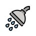
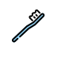
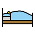
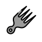
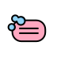

Yesterday you learned the reflexive-pronoun rule: me / te / se / nos / se, right before the verb. Today is pure vocabulary — eight verbs that describe an entire day, all riding on that same rule. Listen to each one in a native voice, then use the flip cards to test yourself.
Three of them are also "boot" stem-changers you already know — marked boot. The pronoun rule stays exactly the same; you just add the stem change you already do in the "boot."
These are infinitives (the "to ___" form) — notice the -se tag that marks them reflexive. Verbs don't carry gender, so there is no color-coding here — press play and say each one aloud.
- despertarse boot · e→ieto wake up — me despierto
- levantarseto get up
- ducharseto shower
- lavarseto wash (oneself)
- cepillarseto brush (teeth / hair)
- peinarseto comb one's hair
- vestirse boot · e→ito get dressed — me visto
- acostarse boot · o→ueto go to bed — me acuesto
To tell your routine as a series — not just one action — you need words that show the order. Three carry you a long way:
- primerofirst
- luegothen / next
- despuésafter / afterward
Primero me levanto, luego me ducho, después me visto. — First I get up, then I shower, after that I get dressed.
All eight verbs describe your rutina — and rutina is a cognate of English routine. Same idea, nearly the same word. Tomorrow you'll read a real morning rutina from start to finish.






Because these ride on yesterday's pronoun rule, you can already build sentences with them:
- Yo me ducho por la mañana. — I shower in the morning.
- Ella se viste rápido. — She gets dressed fast. (vestirse: e→i — me visto, se viste)
- Nosotros nos acostamos tarde. — We go to bed late. (acostarse: o→ue — but nosotros keeps the stem: nos acostamos)
Same move as always: pronoun in front, then the verb — adding the stem change on the "boot" verbs.